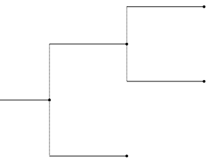

Essentials¶
Tree Representation¶
In general, a tree is a set of linked nodes that simulates a hierarchical tree structure.
The trees we are interested in are phylogenetic trees, which show the relationships among various biological species. Every node can have a name and other node properties, and is connected to other nodes by branches with some length that measures in some form the evolutionary distance between the nodes, and other branch properties.
In the representation that we have chosen, a Tree is a
structure with some content (internally stored in a dictionary
props of properties) and a list of children, which can be
viewed as trees themselves. It can have a parent (up), which is
the tree that has it as a child.
(This representation is quite straightforward and is based on how phylogenetic trees are normally described as newicks. But it has some drawbacks: the concepts of node and tree are blurred together, the branch is considered somehow part of the node (which is possible since there is only one branch per node linking to its parent), and there is no clear distinction between node properties and branch properties. Other representations may be more appropriate.)
Size¶
A Tree also has a size, which is a tuple (dx, dy)
formed by the distance to its further leaf (including its own length),
and the total number of descendant leaves.
This concept is exploited when drawing with different representations, as it will help discover when a node (including its descendants) is visible in the current viewport.
We distinguish between this size, also called node_size, and the
size occupied only by the contents of the node itself, which we call
content_size.
Both sizes have the same dy, since the number of descendant leaves
is the same. They differ in their dx, which is just the node’s
length (distance) for content_size. Since we can easily compute
content_size, it is not stored separately in the tree itself.
Finally, there is another distance that becomes relevant for the
description of the node when drawing: its branch dy (bdy). It is
the distance from the top of the node to the branch, which is computed
so it is halfway between the line that encompasses all of its
children.
Traversal¶
We can traverse all the nodes of a tree by using the tree traverse
function to get an iterator.
The following code would visit the different nodes in preorder:
for node in tree.traverse():
... # do things with node
There is a more versatile way of traversing the tree, which is very
useful for drawing: walk(tree). Its name comes from the standard
library function os.walk, which traverses a directory tree.
It visits all internal nodes twice: when they appear first in
preorder, and after having visited all their descendants. It provides
an iterator it that can be manipulated to stop visiting the
descendants of a node (by setting it.descend = False). The
iterator also provides the current node (it.node), says if it is
the first time that the node is being visited (it.first_visit),
and can give an id that identifies the position of the node within the
original tree (it.node_id).
import operations as ops
for it in ops.walk(tree):
... # do things with it.node
... # possibly depending on it.first_visit
... # maybe using it.node_id too
... # and maybe set it.descend = False to skip its children
node_id¶
The node_id is a tuple that looks like (0, 1, 0) for the node
that comes from the root’s 1st child, then its 2nd child, and then its
1st child.
A tree can be used as a list to access directly one of its nodes. The
syntax tree[name], where name is a string, will return the
first node whose name matches the given one. And tree[node_id],
where node_id is a tuple as described before, will return the
corresponding node at that position.
The syntax is composable, in the sense:
tree[0,1,0] == tree[0][1,0] \
== tree[0,1][0] \
== tree[0][1][0] \
== tree[][0][1][0]
This simplifies working with subtrees, since they can be treated as independent trees and are easily recovered from the original tree at any moment.